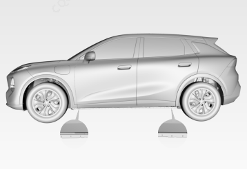

Обязательно парковать автомобиль на твердой, ровной поверхности. Если необходимо поднять автомобиль домкратом на мягком грунте, под домкрат следует подложить блок для распределения нагрузки. Обязательно установить противооткатные упоры под колеса, расположенные по диагонали к точке подъема. Несоблюдение этих инструкций может привести к травмам.
Когда при ремонте автомобиля требуется использовать домкрат, крайне важно полностью понять следующие инструкции. Необходимо подтвердить правильные точки установки опор, точки установки опор обычно выбираются в открытой зоне между передними и задними колесами. При использовании домкрата следует применять прокладку для защиты лакокрасочного покрытия автомобиля от повреждений.
